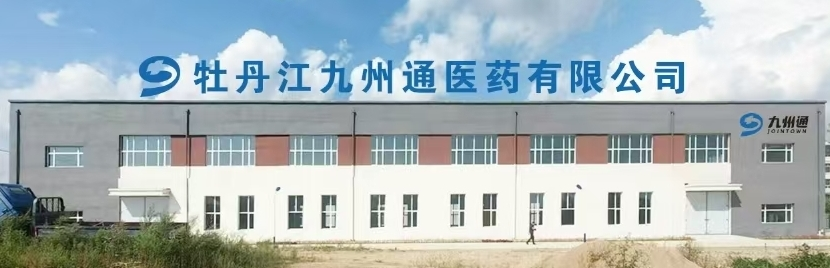

九州物流
九州通现代医药产业园项目落地在西安区海南乡物流园，仓储中心面积达 6333 平米，整体存量约 4.4 万件，可以容纳 5 - 7 亿业务销售额。一期计划投资2亿元，建设占地1.67万平方米的现代医疗智慧物流仓储基地，项目辐射黑龙江东部地区并开拓俄罗斯海外市场，预计年销售额为3亿左右。二期计划投资建设医疗产业-配套工业园区，在此基础上整合医疗行业相关生产型企业进入园区，生产血液透析耗材、一次性医疗耗材、医疗器械等产品，预计年产值1.2亿元以上。

仓库配备了九州通自主研发的一系列先进系统，包括业务管理系统、仓储管理系统、设备调度系统、运输配送系统等。通过构建可视化信息控制平台，实现了智能化、信息化、数字化管理。其中四向穿梭车智能化立库表现尤为出色，它集四向行驶、自动搬运、智能存储和交通动态管理等功能于一体，有效提高了作业效率和准确性。
目前九州通现代医药产业园项目在市委、市政府和西安区委、区政府、卫健委的大力支持下，各项工作正在有序推进。产业园定制的设备已经投入生产，即将进入园区，开工建设包括九州云仓智慧平台、多仓智能化分拣中心、自动化立体仓库、楼库和穿梭车库，设计存量20万件，每日订单处理能力及出库能力均可实现上万条。
另外，九州通与牡丹江三家医院开展的 SPD项目合作也在积极洽谈中，武汉总部对牡丹江项目非常支持，为九州通现代医药产业园的建设和发展提供了有力的的保障。

未来，九州通还将积极开拓俄罗斯远东地区的中药业务，努力打造为黑龙江东部区域首家医药现代化物流仓储中心，集药品、医疗器械、中药饮片、高值耗材、三方物流业务为一体。九州通将秉承“医药通九州，健康送万家”的承诺，做好医药健康产业的服务商，为构建和谐社会贡献力量。